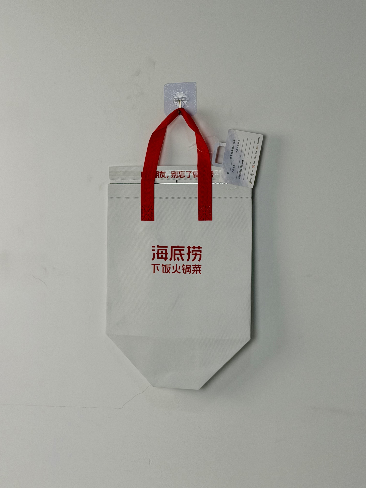

A minimalist white thermal bag for Haidilao's "Rice-Pairing Hotpot Dishes" delivery line, featuring the iconic red brand mark and a clever top-strip reminder that transforms every delivery into a review invitation.

Haidilao is China's most iconic hotpot restaurant chain, famous not only for its Sichuan-style broth and premium ingredients but also for its legendary customer service. With over 1,300 locations globally, the brand has redefined expectations for restaurant hospitality — from complimentary manicures while waiting to birthday singing performances. The "下饭火锅菜" (Rice-Pairing Hotpot Dishes) delivery line extends the Haidilao experience into customers' homes, offering individual hotpot meals designed to accompany rice bowls.
Our delivery isn't just food transport — it's an extension of the Haidilao service experience. Even the bag should make customers feel cared for.
The delivery bag project addressed a specific operational challenge: Haidilao's delivery volume surged during pandemic-era dining restrictions, and the brand needed packaging that maintained its premium reputation while managing cost at massive scale. The solution was radical minimalism — a design so confident that it required no imagery to communicate its value.
The design embraces Haidilao's most powerful brand asset: its name. The two characters "海底捞" alone carry enough recognition that no additional imagery is necessary. The red color references both the brand's corporate identity and the chili-oil red that defines Sichuan hotpot. The near-empty bag surface is a statement of confidence — Haidilao doesn't need to explain itself.
"海底捞" in bold red — no additional graphics needed for China's most recognized restaurant brand.
"朋友，别忘了给我好评" (Friend, don't forget to rate me) printed on seal strip converts every delivery into review prompt.
"下饭火锅菜" clearly differentiates the delivery line from full hotpot service, managing expectations.
Attached inspection card reinforces Haidilao's obsessive quality-control standards and service accountability.
Hotpot delivery presents unique thermal challenges: broth must arrive hot enough to maintain food safety and flavor, while cold accompaniments need separation. The bag specification balances heat retention with practical handling requirements for delivery riders.
| Parameter | Specification | Test Standard |
|---|---|---|
| Heat Retention | > 55°C for 30 min (20°C ambient) | Internal Protocol |
| Load Capacity | 4 kg | ASTM D5265 |
| Oil Resistance | Grade 5 (no penetration) | Internal Protocol |
| Seal Integrity | > 12 hours peel adhesion | ASTM D3330 |
The streamlined production workflow reflects the bag's minimalist design. Four efficient stages deliver massive volumes while maintaining the quality standards Haidilao demands.
100gsm non-woven PP with optical-white masterbatch. Corona treatment for print adhesion consistency.
Red plastisol for brand mark and seal-strip text. Squeegee pressure optimized for clean edge on matte surface.
3mm EPE foam bonded to aluminum-PE barrier. Matte surface lamination for clean, non-slippery hand-feel.
Ultrasonic die-cutting with sealed edges. Red handles attached with cross-stitch. Review-reminder seal strip applied. QC card attached.
The delivery bag was deployed across Haidilao's nationwide delivery network, serving both third-party platform orders and the brand's own direct-delivery mini-program. Rollout coincided with the expansion of the Rice-Pairing Hotpot Dishes line into tier-2 and tier-3 cities.
Key Insight: The review-reminder seal strip proved to be the highest-ROI element of the entire bag design. A/B testing showed that deliveries with the reminder strip generated 35% more platform reviews than identical deliveries in plain-seal bags. In China's delivery economy, review volume directly impacts search ranking and order volume.
The attached quality-control card also reduced negative reviews by 18%. Customers who saw the card perceived greater accountability from the brand, making them more likely to contact customer service with issues rather than leaving public negative reviews.
Three design decisions differentiate this hotpot delivery bag from standard restaurant packaging. Each demonstrates how minimal design can achieve maximum commercial impact.
Haidilao's decision to use only its name — no logo mark, no illustration, no pattern — is a statement of brand dominance. Only brands with truly universal recognition can afford this level of restraint. The minimalism itself becomes a luxury signal, communicating that the brand is too well-known to need explanation.
The review-reminder text on the seal strip is a masterclass in behavioral economics. By framing the review request as a personal favor from a "friend" rather than a corporate demand, Haidilao triggers social reciprocity. Customers who feel cared for by the brand are more likely to reciprocate with positive reviews.
In an era of ghost kitchens and unverified food sources, the attached quality card provides tangible proof of Haidilao's accountability. The physical card transforms abstract brand promises into inspectable evidence — a small detail that significantly impacts customer trust in delivery contexts.
We manufacture thermal delivery bags for restaurant and food-service brands. From behavioral nudges to oil-resistant construction, we create packaging that drives reviews and protects your reputation.